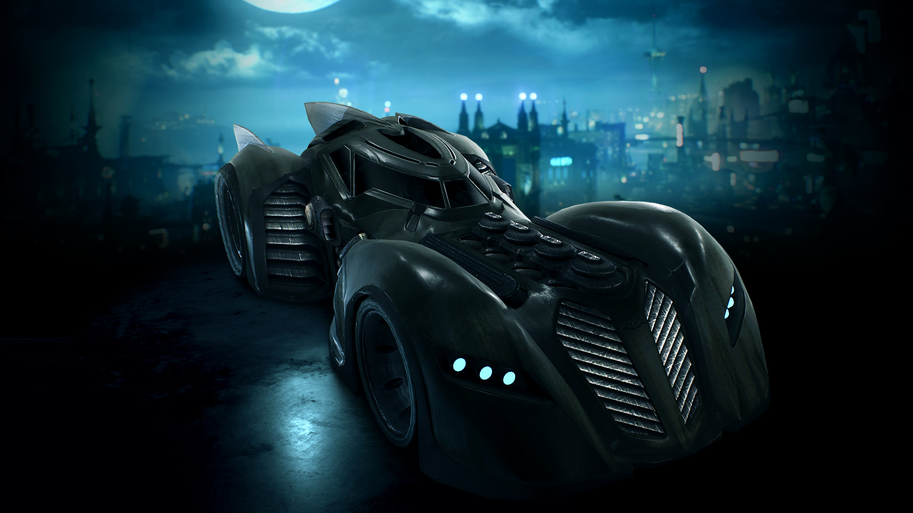
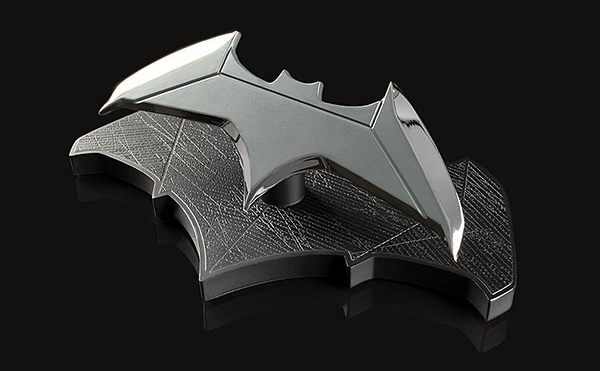
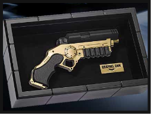
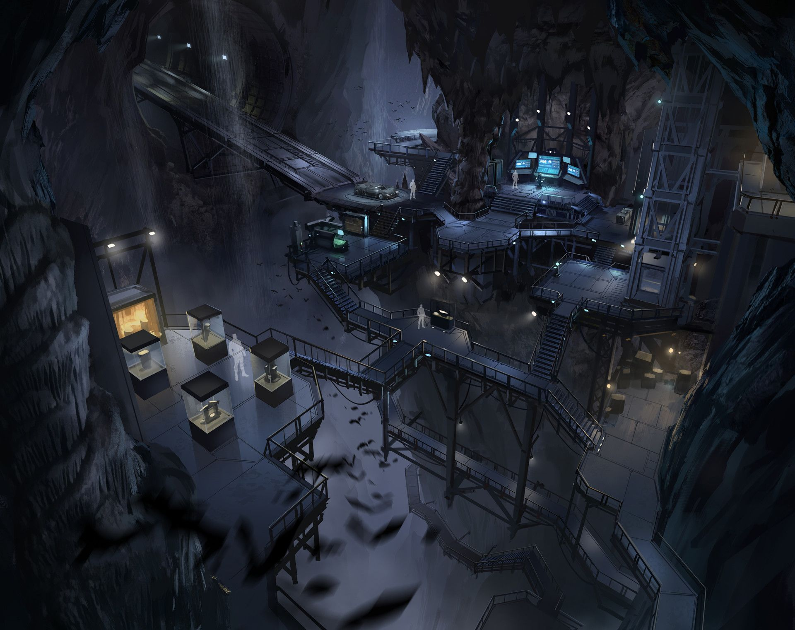
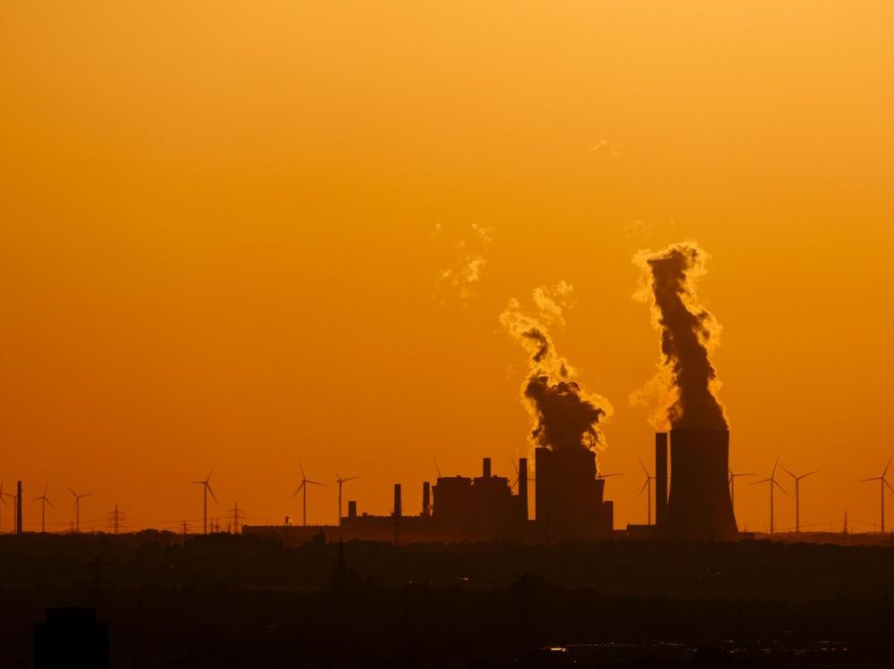
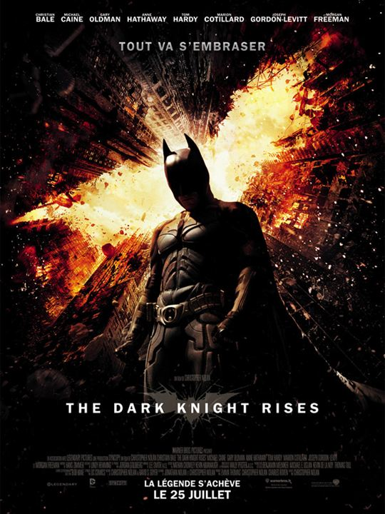
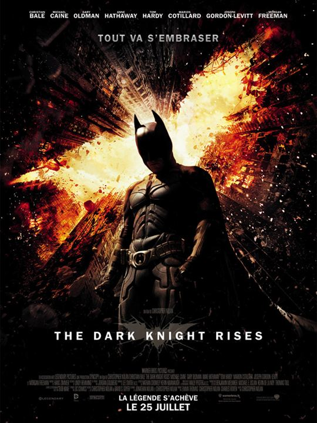

Le justicier masqué est incroyable en mission.
Mais la pollution qu'il dégage aussi l'est !
Découvrez le Bilan Carbone de Batman.

Nous connaissons tous Batman. Nous avons l’habitude de le suivre dans ses périples.
Le voir manipuler toutes sortes de gadgets et véhicules. Nous nous sommes déjà tous demandé combien tout ça coûtait.
Mais nous nous sommes jamais demandé combien tout ça consommait !

Comment répondre à cette question ? Il faut d’abord faire le bilan de tous les gadgets et activités du Justicier.
Commençons par les gadgets.
Les Gadjets de Batman
Le Batarang et ses dérivés :
L’explosif : Émet du Co2 et autres gaz carbone
L’électrique : Envoie la décharge électrique d’un
tazer
Le télécommandé : Possède une batterie en
lithium
Le sonique : Émet une décharge plus puissante
qu’un tazer

Et les autres gadgets :
Le Bat-Grappin : Énergie Pneumatique donc gazs
Le Bat-Griffe : Énergie Pneumatique donc gazs
Le Fusil : Onde électromagnétique très forte permettant d'arrêter ou détruire toute machine électrique (environ égal à 10 tazers)

La Batbombe : Explosif très puissant donc gazs
Gel explosif : Explose donc émet des gazs
Tyrolienne : Énergie pneumatique
Ajoutons encore sa batmobile. Il l'utilise à toutes ses missions et consomme autant que trois 4x4 Cadillac.
Une consommation incroyable
En imaginant une moyenne par mission d'environ :
2 batarang explosifs, 3 électriques, 1 télécommandé et 1 sonique, 1 utilisation de la tyrolienne, 1 de son grappin et 1 de sa griffe, 1 bat bombe, 1 balle fumigènes, 1 utilisation du fusil toutes les deux missions et 20km de Batmobile.
On peut calculer une pollution créée par mission d’environ 1 aller-retour Paris New York
Avec deux missions par semaine, Batman crée donc la pollution de 52 allers-retours Paris New York.
La BatCave
Mais ce n’est pas tout. Batman consomme certes dans ses missions mais il ne faut pas oublier sa batcave. En plus de rester allumée celle-ci consomme autant que tout un quartier américain.

En plus de rester allumée celle-ci consomme autant que tout un quartier américain.
Selon Perspective monde, la consommation électrique moyenne d’un foyer américain est de 13 kw/h.
La cave doit consommer autant qu’une dizaine de foyers donc environ 130 kw/h.
La BatCave consomme donc 3120 kw/jour !
Consommation à l’année
Avec ces données nous pouvons estimer une consommation électrique à l’année exorbitante.
Selon FranceInfo, un aller-retour Paris New York équivaut au chauffage d’un logement pendant 1 an. Cela équivaut à 2 tonnes de Co2 relâchées.
A l’année il émet donc 104 tonnes de Co2 à lui seul dans ses missions.
Sa BatCave consomme elle 3120 kw par jour. En sachant que 11 000 kw équivalent à 1 tonne de Co2 relâchée. On calcule la consommation de la cave à l’année : 3120 x 365 = 1 138 800 kw.
Divisé par les 11 000 = 103,5 tonnes de Co2 relâchées à l’année.

Au total Batman relâche donc 207,5 tonnes de Co2 par an. Batman pollue autant en un an que le chauffage de 104 logements pendant la même durée.
Ce chiffre est énorme et montre que tous ces gadgets ne sont pas inoffensifs...
L'argent mène à la pollution


Notre consommation électrique et
la pollution qu'on crée augmente de
plus en plus. Comment peut-on
réduire tout ça ?
Lire la suite !

 
